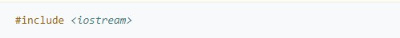

ESTRUCTURA BÁSICA DE UN PROGRAMA EN C++
Un programa de computadora es un conjunto de instrucciones (órdenes dadas a la máquina) que producirán la
ejecución de una determinada tarea. En esencia, un programa es un medio para conseguir un fin. El fin será
probablemente definido como la información necesaria para solucionar un problema.
En general, los programas escritos en C++ tienen una estructura (básica) compuesta por tres secciones:
- Directivas de preprocesador
- Macros de preprocesador (#define y #undef)
- Inclusiones condicionales (#ifdef, #ifndef, #if, #endif, #else and #elif)
- Control (#line)
- Error (#error)
- Inclusión de fichero (#include)
- Pragma (#pragma)
- Declaraciones globales
- Declaración de funciones
Los compiladores de C++ proporcionan bibliotecas de funciones, y cada biblioteca de funciones tiene asociada un archivo de definición que se denomina cabecera. Para utilizar algo de una biblioteca en un programa (por ejemplo, una función), hay que colocar al principio del programa una directiva de preprocesamiento seguida de la cabecera de la biblioteca entre signos de "menor que" y "mayor que" (< >). A continuación se muestra un típico ejemplo de una directiva de preprocesador:
En el ejemplo anterior, la directiva invocada es include y la cabecera iostream, e indican al preprocesador que debe incluir la librería iostream a nuestro programa. Cabe señalar que todas las directivas comienzan con el símbolo numeral #. Dentro de las directivas de preprocesador se encuentran:
En esta sección se declaran todas variables y cabeceras de funciones que seran vistas de manera global,
es decir, que su alcance es total en el programa.
Por ejemplo:

En el ejemplo anterior, se definen (ademas de las directivas de preprocesador, vistas en la sección anterior)
una variable y una función. La variable autor podrá ser utilizada por todas las funciones del programa.
Mientras que la función "adicion" solo fue declarada de la forma "inline". Una función se dice declarada
"inline" cuando solo se señala su nombre y sus tipos de entrada y salida. Su definición completa se reserva
para mas adelante.
La ultima sección del programa es la declaración de funciones. La primera función que se debe declarar es la función principal o "main". La función main es la mas importante, pues es la que es invocada cuando el programa se ejecuta. Toda instrucción que no sea declarada dentro de esta, simplemente no sera considerada. A continuación de la función "main", se permite la definición completa de las funciones declaradas en la sección de declaraciones globales. En el siguiente ejemplo, mostraremos la estructura definitiva de un programa y la declaración completa de sus funciones: